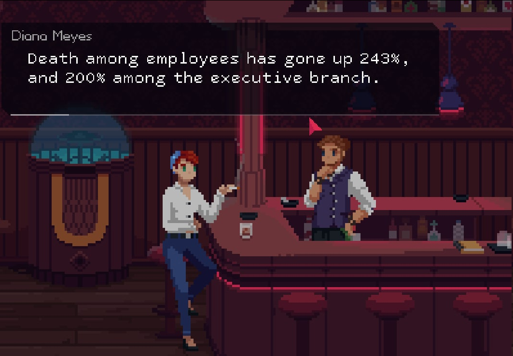

I am going to try to write this post from the bottom of my heart. A bit off the beaten path of lightheartedness that I have been enjoying on here, but it's something dear to me.
there was a time in my life that comes to mind too little. a time of real living. i had friends and i had love, i had turbulence in the love, but it probably balanced out the already viciously-strong emotions that we had for each other. now of course, i dont have anyone. i dont have anyone. i dont. really. i have my "best friend", which, hardly ever feels like a friend at all. i think the biggest problem in this sector, actually, is moreso the fact that she is the only friend i have. she is totally in no way shape or form best friend material for me. the polar opposite. but shes a huge part of my life, and i guess that makes me rather depressed.
the ultimate problem in my life is the lack of love i feel. i have digressed a ton, but what i have been meaning to point out, is that when i was a kid, i could cry and laugh and play and smile and be angry in a uniform range of emotion. it was fantastic, as if i was 20/20 with living life. and then i lost it all. and over the years i had been slowly rotting into a pit of darkness where no joy can see the light of day. i lay down in this cold, solid pit, looking up above and seeing cracks of light shining through. but it's not enough for me to see the outside world. just it's radiance, a radiance i havent truly felt on my skin ever since i fell down here. its the suns heat-- the vitamin D. i havent felt that warmth, the warmth of the sun, in so very long.
then i think back to my ex. what an oversimplification of what that person was to me. she was the sun to my earth. when we were together we would tease each other with saying "i'd die if i lost you" or something dramatic-- whatever, 12 year old shit-- but how am i faring now at 18? she's moved on, all the friends ive ever had have moved on, and nobody who ive associated with in real life aside from my family even thinks about me anymore. might they actually think about me without my knowledge? sure, but i dont give a fuck. never have and never will. if the sun is shining-- even very brightly, but im stuck in a room with no windows or lights, what difference does the time of day make?! ugh.
i miss living. ever since freshman year of high school, ive become someone i am not. ive changed my gender and name and even my voice, but im still not really happy. when i leave here to cleveland, i wont feel any better, once i get acquainted. people say that often-- that your baggage follows you around.
i just texted her. my lost sun. my shining star. well, I PM'd her. and once she replies her light will touch me once more-- if only a tad, but hopefully it will allow me to find me lost self.
you know, now that i texted her, i feel a lot less sad, and a lot more positive. i dont know what comes next in this sector of my life, but ive taken a step onto a good path. im definitely feeling more positive rn-- and i hope i can feel that beautiful warm sun soon again^^
even if i dont get it from another person... i guess ill also have to learn to live with my current reality. its been super hard. its going to continue to be super hard. but i will learn, one day at a time.
right...? ^^:;
-->
The Red Strings Club was amazing! short, but super sweet. makes me recall the great time I had immersed in the story of the Synergia visual novel! i thought it was like vallhalla, but it really is a lot more.
it really gets my fire for cyberpunk going again! maybe ill play SENSE: A Ghost Story next. we shall see...^^
red strings club legit "borrowed" the idea of the Sibyl System from Psycho Pass with how the father of Akhara described SNW. is this a problem? not really, everyone does it, it's how star wars and everything else was made, but it's funny to see the overlap of the few influential cyberpunk works there are.
and it truly is only a few, arguably countable on your fingers. either way i still love seeing my genre develop^^
this game fucking rocks! VA-11 Hall-A was fantastic, but this game really brings the Cyberpunk Booze genre to the next level.
i hope N1RV Ann-A can keep up the pace, honestly-- valhalla was a good visual novel (with some interaction), will nirvanna follow the same path or will it move towards the interactivity of Red Strings? time will tell.
either way, i hope i cant beat Red Strings and keep it going! im loving it so far-- would hate to see it die out in my mind like plenty other great titles. of course, I'll come back to em, can't stay a broken record forever-- but ultimately this game is the bomb, and I can't wait to see where it takes me next^^
okay. now it's time to eat some food. not sure when I'll sleep, I got a phone interview this morning (I think? it's a long story.) but I'm feeling in my element. anyways, good day to you!
just started Red Strings Club. real fun

happiness is an ounce of weed in tokyo
people apparently dislike kyoto
give me a garden of weed and beer on tap and someone soft to hug and kiss
Somehow it is a more pleasing feeling to yearn for the love of my past than to have lost it completely. Now I feel empty and bereft of love. At least then I was still holding onto it. And hey-- don't take this as depression. In fact, the opposite. I am learning to live with myself better (though I still don't know how to love myself. I'm not quite sure what it means).
Yet, in the end, I still feel "Let's get depressed", and I want to listen to some music that's made me cry. It was a moment of lonely weakness, crying over the fact that I was unloved.
and for some reason I want to relive that. perhaps those were, ironically, easier times.
cant wait for my tiddy skittles to give me some more clavicle
manga is so much better than anime. lots more escapism to offer, though ofc more challenging immersion ¯\_(ツ)_/¯
hello
this is the first post on this page
go to https://komurokaede.carrd.co/ for some of my socials
anyways. im on HRT as of a few days ago. my mood has been changing for the better. i did a job interview today. hope i get the job so i can get the fuck out of shitsville NJ.
im learning to manage myself better. last night i thought to ease anxiety, "just gotta wake up at 9:30, do my Japanese lesson, then go to my job interview, get the job, and work for a few weeks and get paid. then i work another couple and get paid again, and repeat the process a few more times. then i put in my two weeks, buy an amtrak ticket, pack my shit and im out of here."
really putting yourself into perspective as if you're a movie character blowing through months in an on-screen time of 10 minutes, makes things much simpler. yeah, there will be times where I wake up and feel like dog shit, but thats where the willpower and coffee comes thru. weed though, i might drop it-- its pure escapism and i want to love this world. i dont even have friends, i get no dick, i sure as hell get no pussy, no hoes or bros, zilch. social life deader than the dodo bird. hopefully theres enough good movies out there to eat up my spare time.
i also reallllllly wanna get back into anime, but good grief i've already seen the peak of what there's to offer. super hard to find good anime when it's like you've seen em all. i genuinely don't get the mfs who just watch all the new seasonal shows-- i am not quite willing to dedicate my time to cringe-inducing trash, though, its extremely rare to find anything like that. maybe im just fuckin picky. either way. once i get this job-- racing sim rig. then im gonna drown hours of my life into Assetto Corsa, lol. and hopefully ill be able to finally make some fucking games, and begin my business. going to cleveland to meet up with my second-in-hand will surely allow this.
just spending a lot of time these days working on myself. we'll see how shit goes. what i have to do is NOT, and i mean **NOT** take shit slow. taking shit slow makes me want buckshot in my head. yeah the moment can be beautiful, but i dont even want to be in this fucking country! i want to be in japan. that is the dream, and its less of a dream than buying a fucking house-- its simply where i will begin the TRUE me, i sure hope. my TRUE life. god i cant wait, but now, if i just zoom through these days as best i can, i can get there soon.
i just wanna be there soon. "soon". the only thing thatll distract me from this yearning, craving, and anguish is love. hopefully ill find that soon, probs in cleveland. or i can just text my ex on instagram and embarass myself again. i dont know how she feels, but nobody has even looked at me the way she has, and nobody has produced the same feelings that she has too. well, she is a super old ex, so time's already moved on. i dont know though, maybe getting in contact again will be worth it. we'll see.
anyways for the rest of the night i just gotta cope with the random anxiety thats kicking in. hate this shit, kills the vibes and my mood. but im starting to hold this shit down, so ill learn :)
conclusively-- thanks for reading my first post, whoever you are. now you're pickin my brain. enjoy. have a goodnight yall.